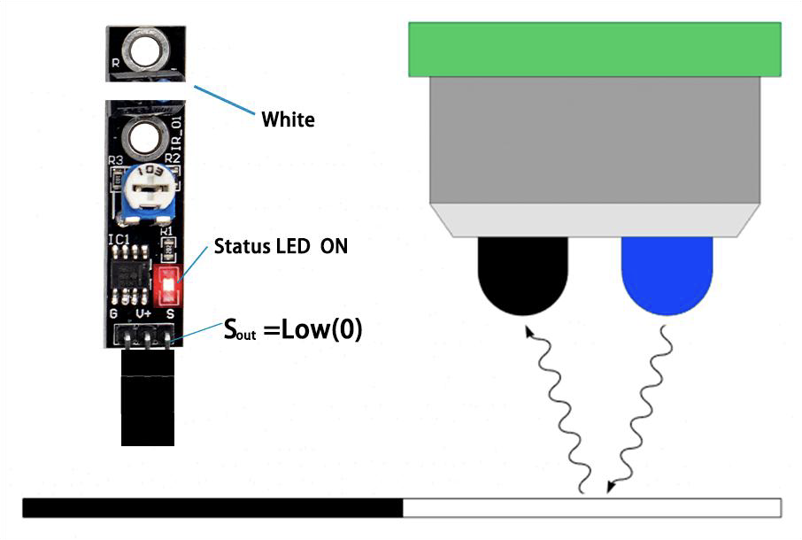
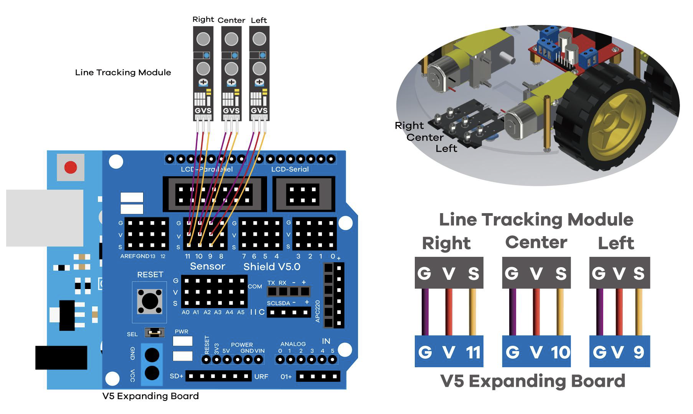

Line following car
1 Background
1.0.1
A line following car is a simple robot that can follow a line on the ground. It uses sensors to detect the line and adjust its direction accordingly. The most common sensors for this purpose are infrared (IR) sensors, which can detect the difference in reflectivity between the line and the surrounding surface.

When the sensor is over a light-colored or reflective surface, the IR light reflects back to the sensor, causing it to output a low signal (0). When the sensor is over a dark surface, like our line, the IR light does not reflect back and the sensor returns a high signal (1). By reading the signals from multiple sensors, the car can determine its position relative to the line and adjust its motors accordingly.
| Left | Center | Right | Action |
|---|---|---|---|
| 0 | 0 | 0 | Stop |
| 0 | 1 | 0 | Go straight |
| 1 | 0 | 0 | Turn right |
| 0 | 0 | 1 | Turn left |
| 1 | 1 | 0 | Turn slight right |
2 Wiring

3 Code
int irLeft;
int irCenter;
int irRight;
const int Black = 1;
int pinSensorLeft = 9;
int pinSensorCenter = 10;
int pinSensorRight = 11;
int pinRightN = 2;
int pinRightP = 4;
int pinLeftN = 7;
int pinLeftP = 8;
void driveForward(int car_speed) {
digitalWrite(pinRightN,LOW);
digitalWrite(pinRightP,HIGH);
digitalWrite(pinLeftN,LOW);
digitalWrite(pinLeftP,HIGH);
analogWrite(5,car_speed);
analogWrite(6,car_speed);
}
void driveBackward(int car_speed) {
digitalWrite(pinRightN,HIGH);
digitalWrite(pinRightP,LOW);
digitalWrite(pinLeftN,HIGH);
digitalWrite(pinLeftP,LOW);
analogWrite(5,car_speed);
analogWrite(6,car_speed);
}
void driveLeft(int car_speed) {
digitalWrite(pinRightN,LOW);
digitalWrite(pinRightP,HIGH);
digitalWrite(pinLeftN,HIGH);
digitalWrite(pinLeftP,LOW);
analogWrite(5,car_speed);
analogWrite(6,car_speed);
}
void driveRight(int car_speed) {
digitalWrite(pinRightN,HIGH);
digitalWrite(pinRightP,LOW);
digitalWrite(pinLeftN,LOW);
digitalWrite(pinLeftP,HIGH);
analogWrite(5,car_speed);
analogWrite(6,car_speed);
}
void STOP() {
digitalWrite(pinRightN,HIGH);
digitalWrite(pinRightP,HIGH);
digitalWrite(pinLeftN,HIGH);
digitalWrite(pinLeftP,HIGH);
analogWrite(5,0);
analogWrite(6,0);
}
void setup(){
pinMode(pinSensorLeft, INPUT);
pinMode(pinSensorCenter, INPUT);
pinMode(pinSensorRight, INPUT);
pinMode(pinRightN, OUTPUT);
pinMode(pinRightP, OUTPUT);
pinMode(pinLeftN, OUTPUT);
pinMode(pinLeftP, OUTPUT);
}
void loop(){
irLeft = digitalRead(pinSensorLeft);
irCenter = digitalRead(pinSensorCenter);
irRight = digitalRead(pinSensorRight);
if (irLeft != Black && (irCenter == Black && irRight != Black)) {
// _ * _
driveForward(100);
} else if (irLeft == Black && (irCenter == Black && irRight != Black)) {
// * * _
driveLeft(180);
} else if (irLeft == Black && (irCenter != Black && irRight != Black)) {
// * _ _
driveLeft(160);
} else if (irLeft != Black && (irCenter != Black && irRight == Black)) {
// _ _ *
driveRight(160);
} else if (irLeft != Black && (irCenter == Black && irRight == Black)) {
// _ * *
driveRight(180);
} else if (irLeft == Black && (irCenter == Black && irRight == Black)) {
// * * *
driveForward(75);
} else if (irLeft != Black && (irCenter != Black && irRight!=Black)) {
// _ _ _
STOP();
}
}
The car will not move until it detects a line. Once it does, it will start moving forward. If it detects the line on the left or right, it will turn in that direction to stay on the line. If it loses the line, it will stop until it finds the line again.
There will be a small track on the desk for you to test your car.
4 Modifications
To adjust the speed, and thus amount of turning, you might change the values you give to driveRight() and driveLeft(), and driveForward().